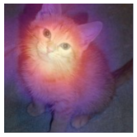
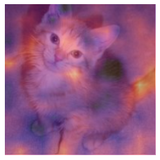

Understanding CNN’s with a CAM - A Class Activation Map
In this article we will look at how Class Acivation Maps (CAM’s) can be used to understand and interpret the decisions that Convolutional Neural Networks (CNN’s) make.
deep-learning
Author
Pranath Fernando
Published
June 19, 2021
1 Introduction
In this article we will look at how Class Acivation Maps (CAM’s) can be used to understand and interpret the decisions that Convolutional Neural Networks (CNN’s) make.
2 CAM and Pytorch hooks
A Class Activation Map (CAM) and help us understand why Convolutional Neural Networks (CNN’s) make the descisions they do. CAM’s do this by looking at the outputs of the last convolutional layer just before the average pooling layer - combined with the predictions, to give a heatmap visualisation of why the model made that descision.
At each point in our final convolutional layer, we have as many channels as in the last linear layer. We can compute a dot product of those activations with the final weights to get for each location in our feature map, the score of the feature that was used to make that decision. In other words, we can identify the relationships between the parts of the network that are most active in generating the correct choice.
We can access activations inside the network using Pytorch hooks. Wheras fastai callbacks allow you to inject code into the training loop, Pytorch hooks allow you to inject code into the forward and backward calculations themselves..
Lets see an example looking at a dataset of cats and dogs.
Downloading: "https://download.pytorch.org/models/resnet34-b627a593.pth" to /root/.cache/torch/hub/checkpoints/resnet34-b627a593.pth
/usr/local/lib/python3.7/dist-packages/torch/nn/functional.py:718: UserWarning: Named tensors and all their associated APIs are an experimental feature and subject to change. Please do not use them for anything important until they are released as stable. (Triggered internally at /pytorch/c10/core/TensorImpl.h:1156.)
return torch.max_pool2d(input, kernel_size, stride, padding, dilation, ceil_mode)
epoch
train_loss
valid_loss
error_rate
time
0
0.138940
0.025390
0.008796
00:48
epoch
train_loss
valid_loss
error_rate
time
0
0.047596
0.024207
0.007442
00:52
We can get a cat image. For CAM we want to store the activations of the last convolutional layer, lets create a hook function in a class with a state.
img = PILImage.create(image_cat())x, = first(dls.test_dl([img]))class Hook():def hook_func(self, m, i, o): self.stored = o.detach().clone()
We can then instantiate a hook and attach it to any layer, in this case the last layer of the CNN body.
So for each image in the batch, we get a 7x7 channel map that tells us which activations were higher or lower, which will allow us to see what parts of the image most influenced the models choice.
The parts in bright yellow correspond to higher activations and purple lower activations. So we can see the paws are the main area that made the model decide it was a cat. Its good to remove a hook once used as it can leak memory.
hook.remove()
We can manage hooks better by using a class, to handle all these things automatically.
class Hook():def__init__(self, m):self.hook = m.register_forward_hook(self.hook_func) def hook_func(self, m, i, o): self.stored = o.detach().clone()def__enter__(self, *args): returnselfdef__exit__(self, *args): self.hook.remove()with Hook(learn.model[0]) as hook:with torch.no_grad(): output = learn.model.eval()(x.cuda()) act = hook.stored
This Hook class is provided by fastai. This approach only works for the last layer.
3 Gradient CAM
The previous approach only works for the last layer, but what if we want to look at activations for earlier layers? Gradient CAM lets us do this. Normally the gradients for weights are not stored after the backward pass, but we can store them, and then pick them up with a hook.
class HookBwd():def__init__(self, m):self.hook = m.register_backward_hook(self.hook_func) def hook_func(self, m, gi, go): self.stored = go[0].detach().clone()def__enter__(self, *args): returnselfdef__exit__(self, *args): self.hook.remove()
Let’s try this approach on the last layer, as we did before. However we can use this approach to calculate the gradients for any layer, with respect to the output.
cls =1with HookBwd(learn.model[0]) as hookg:with Hook(learn.model[0]) as hook: output = learn.model.eval()(x.cuda()) act = hook.stored output[0,cls].backward() grad = hookg.stored
/usr/local/lib/python3.7/dist-packages/torch/nn/modules/module.py:974: UserWarning: Using a non-full backward hook when the forward contains multiple autograd Nodes is deprecated and will be removed in future versions. This hook will be missing some grad_input. Please use register_full_backward_hook to get the documented behavior.
warnings.warn("Using a non-full backward hook when the forward contains multiple autograd Nodes "
The weights for the Grad-CAM approach are given by the average of our gradients accross the feature/channel map.
w = grad[0].mean(dim=[1,2], keepdim=True)cam_map = (w * act[0]).sum(0)_,ax = plt.subplots()x_dec.show(ctx=ax)ax.imshow(cam_map.detach().cpu(), alpha=0.6, extent=(0,224,224,0), interpolation='bilinear', cmap='magma');

Let’s now try this on a different layer, the second to last ResNet group layer.
with HookBwd(learn.model[0][-2]) as hookg:with Hook(learn.model[0][-2]) as hook: output = learn.model.eval()(x.cuda()) act = hook.stored output[0,cls].backward() grad = hookg.storedw = grad[0].mean(dim=[1,2], keepdim=True)cam_map = (w * act[0]).sum(0)_,ax = plt.subplots()x_dec.show(ctx=ax)ax.imshow(cam_map.detach().cpu(), alpha=0.6, extent=(0,224,224,0), interpolation='bilinear', cmap='magma');
/usr/local/lib/python3.7/dist-packages/torch/nn/modules/module.py:974: UserWarning: Using a non-full backward hook when the forward contains multiple autograd Nodes is deprecated and will be removed in future versions. This hook will be missing some grad_input. Please use register_full_backward_hook to get the documented behavior.
warnings.warn("Using a non-full backward hook when the forward contains multiple autograd Nodes "

4 Conclusion
In this article we saw how we can use Class Activation Map’s to understand and interpret the choices a CNN makes.